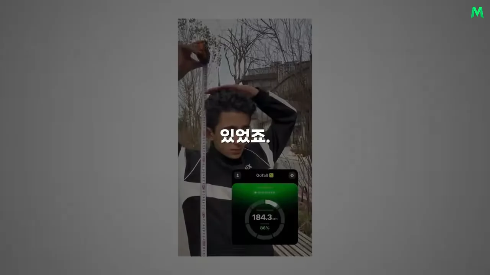
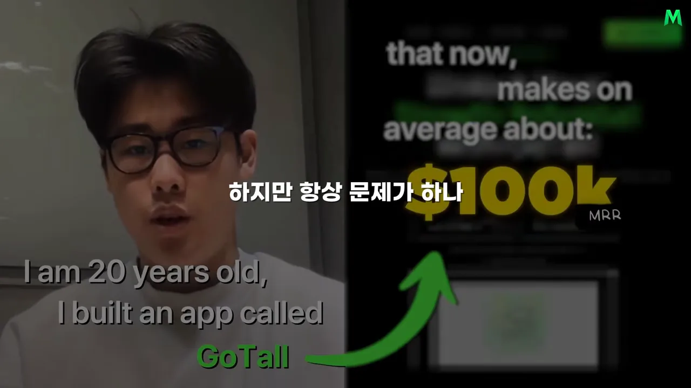
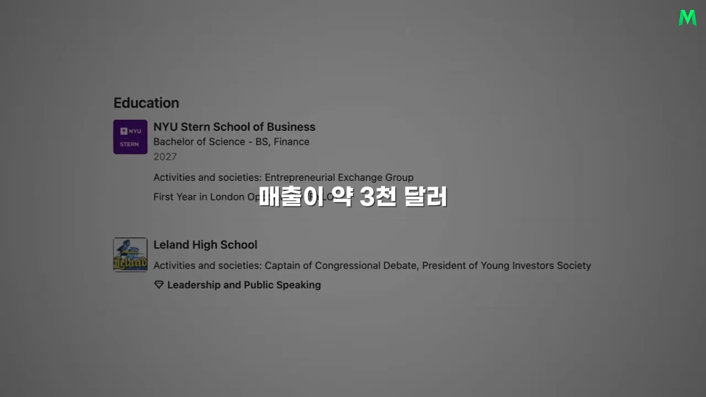
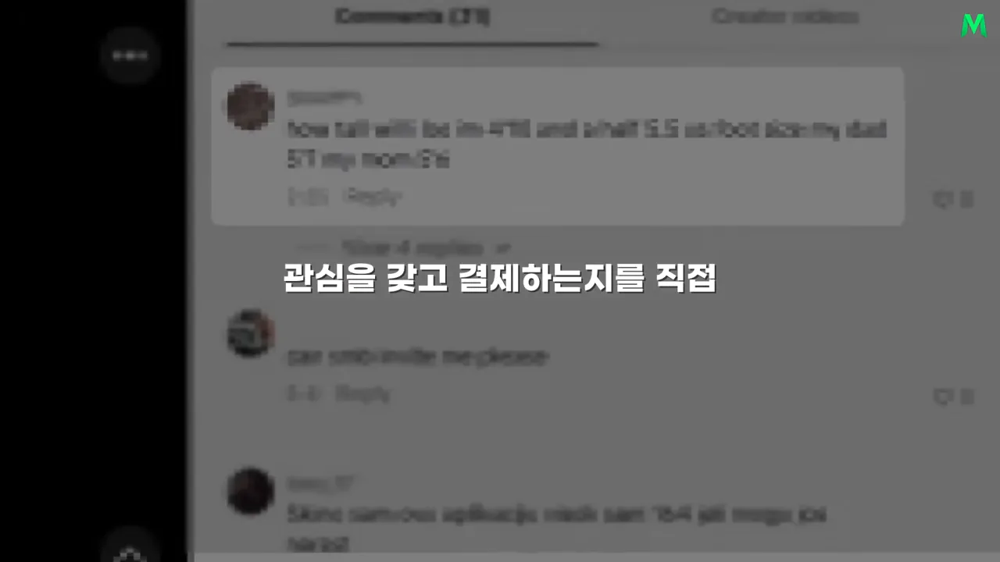
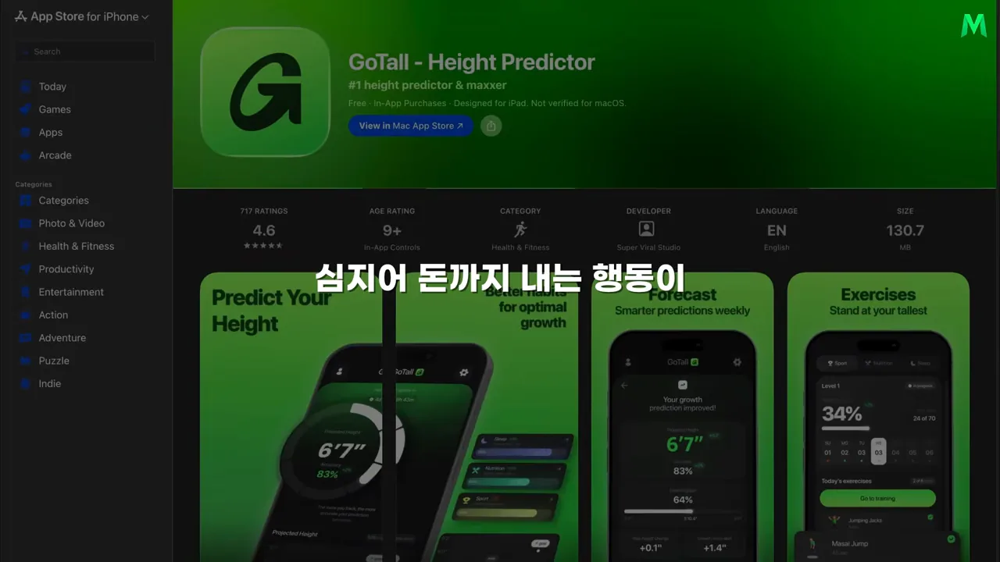
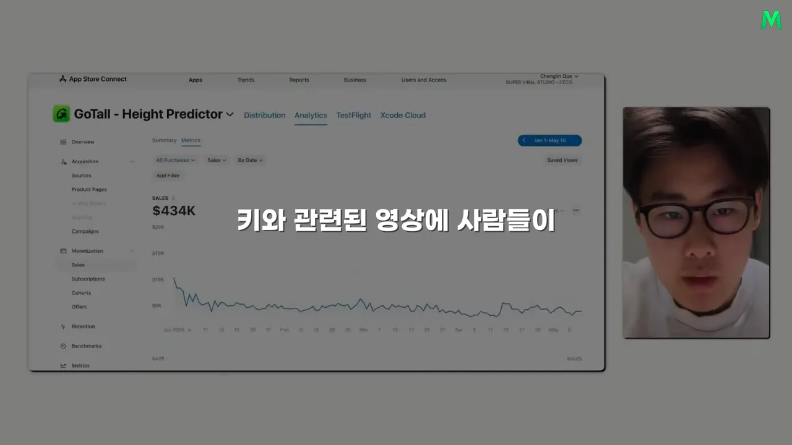
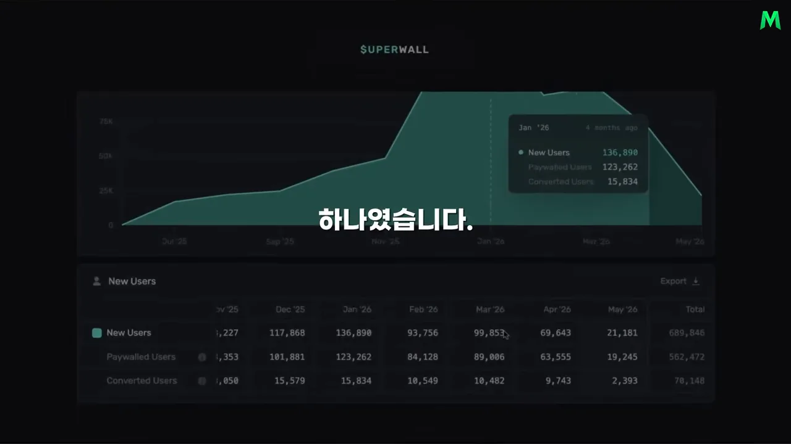
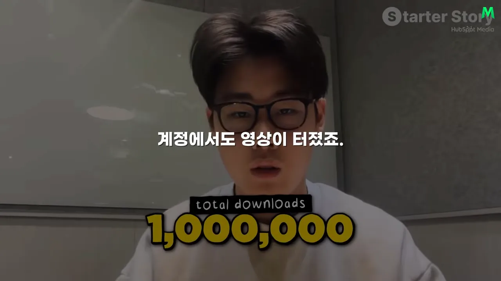
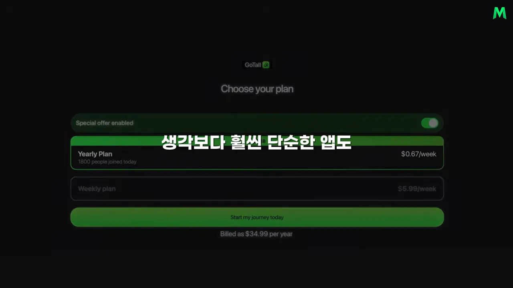
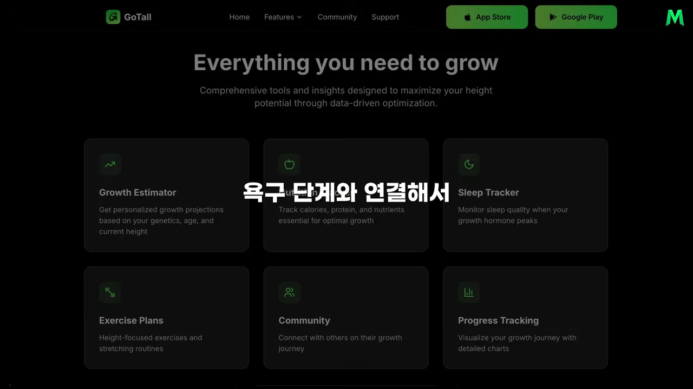

실패해도 마케팅은 배운다
GoTall은 사용자가 나중에 몇 cm까지 클지 예측해 주는 앱이에요. 영상 앞부분에 나오는 홍보 영상에서는 한 사람이 줄자를 머리에 대고 서 있고, 오른쪽 아래 앱 화면에 예상 키 184.3cm와 진행률 86%가 둥근 게이지로 떠 있어요.

만든 사람은 20살 대학생 마이클이에요. 화면 왼쪽엔 인터뷰 속 마이클의 첫마디 'I am 20 years old, I built an app called GoTall'이, 오른쪽엔 노란 글씨로 $100k MRR(Monthly Recurring Revenue)이 크게 찍혀 있어요.

내레이션은 이 숫자를 '한 달에 약 1억 3천만 원'이라고 옮겨요. 원래 인터뷰에서 마이클이 말한 건 달러 기준 '평균 약 10만 달러'예요. 원화 금액은 내레이터가 환산한 값이라, 이 문서에서는 달러로 적었어요.
왜 이 앱을 만들었나요
마이클은 뉴욕대에서 금융을 공부하던 학생이었어요. 화면에 잠깐 비치는 학력란에도 NYU(New York University) Stern School of Business, 금융 전공 학사('BS, Finance'), 2027년 졸업 예정이라고 적혀 있어요.

금융권 취업을 준비했지만 원하던 회사에서 줄줄이 떨어졌어요. 그때 눈에 들어온 게 마케팅 하나로 빠르게 크는 스타트업들이었어요.
앱을 만드는 건 10대 때부터 해 봤어요. 문제는 늘 같았어요. 만들 줄은 아는데 사람들이 쓰게 만들 줄을 몰랐어요. 그래서 이번에는 목표를 바꿨어요.
- 완벽한 앱보다, 사람들이 왜 관심을 갖고 돈을 내는지를 직접 배우기
- 앱이 실패해도 괜찮다. 적어도 마케팅하는 법은 남는다
- 대단한 창업 아이디어 대신, 사람들이 이미 관심을 보이는 아이디어부터 찾기
마지막 항목이 다음 섹션의 출발점이에요.
이미 팔리는 아이디어에서 출발했어요
마이클은 무엇을 만들어야 할지 몰랐어요. 그래서 새 아이디어를 짜내는 대신, 이미 돈이 오가는 사업부터 찾아봤어요. 그가 들여다본 곳이 운영 중인 사업이나 앱을 매물로 올리는 Acquire.com이에요.
거기서 자기가 만들려던 것과 비슷한 키 관련 앱이 약 2만 달러에 팔리고 있었어요. 보통이라면 "이미 누가 만들었네" 하고 다른 걸 찾았을 거예요. 마이클은 반대로 읽었어요. 이런 앱이 실제로 거래된다면, 적어도 이 문제에 돈을 쓰는 사람이 있다는 뜻이라고요.
신호는 이것 하나가 아니었어요. 마이클은 세 군데에서 같은 이야기를 들었어요. 아래 그림은 영상이 말로 늘어놓은 세 신호를 한곳에 모은 거예요.
묻지도 않았는데 정보를 남기는 사람들
가장 강한 신호는 틱톡 댓글이었어요. 아래 화면은 스트레칭 영상에 달린 댓글을 확대한 거예요. 흐리지만 맨 위 댓글은 'how tall will i be im 4'11 …'로 시작해요. 자기 키를 적고, 이어서 아빠 키와 엄마 키까지 늘어놓으며 얼마나 클지 묻고 있어요.

내레이터가 예로 든 댓글도 같은 모양이에요. "저는 15살이고 지금 180cm인데요. 아빠는 이 정도고 엄마는 이 정도예요. 앞으로 얼마나 더 클까요?" 사람들이 이 문제에 그만큼 관심이 있다는 뜻이에요.
여기서 마이클이 얻은 결론은 단순해요. 좋은 아이디어를 위해 세상에 없는 걸 발명할 필요는 없어요. 이미 있는 아이디어라도 사람들이 계속 검색하고, 질문하고, 돈까지 쓴다면 충분히 새 사업 기회가 될 수 있어요.
이미 존재하는 아이디어라도 사람들이 계속 검색하고 질문하고 돈까지 쓰고 있다면 충분히 새로운 사업 기회가 될 수 있었던 거죠.
— 영상 02:44
얼마나 많이 보느냐보다 얼마나 신경 쓰느냐
아이디어를 찾은 마이클은 곧바로 앱을 만들어 올렸어요. 영상이 보여 주는 앱스토어 화면에는 'GoTall - Height Predictor'라는 이름과 '#1 height predictor & maxxer'라는 부제, 건강·피트니스(Health & Fitness) 카테고리가 보여요. 아래 미리보기에는 예상 키 6'7"(약 201cm)과 정확도 83%가 표시된 화면이 있어요.

출시 단 이틀 만에 첫 결제가 들어왔어요. 트래픽이 많지도, 조회수가 높지도 않았어요. 적은 사람 중 누군가 돈을 냈다는 것 자체가 신호였어요. 재미로 구경하는 게 아니라, 돈을 내고서라도 자기 키를 알고 싶은 사람이 있다는 뜻이니까요.
틱톡에서도 마찬가지였어요. 키 콘텐츠를 올리자 하루 10~20건씩 "제 키도 예측해 주세요" 하는 DM이 들어왔어요. 사람들이 자기 정보를 보내면서 답을 달라고 한 거예요.
마이클이 쓰는 기준
그래서 마이클은 아이디어를 고를 때 '얼마나 많은 사람이 보느냐'가 아니라 '사람들이 그 문제를 얼마나 신경 쓰느냐'를 보라고 해요. 조회수는 가장 약한 신호예요. 직접 메시지를 보내고, 자기 정보를 입력하고, 돈까지 내는 쪽으로 갈수록 증거가 강해져요.
키 뒤에 있는 욕구
마이클은 이 관심을 매슬로의 욕구 단계에 대 보며 설명해요. 키는 몸의 숫자 하나로 끝나지 않아요. 아래 그림처럼 남에게 어떻게 보이고 싶은지와 연결돼요.
결국 사람들이 돈을 내는 이유는 키 계산이 신기해서가 아니에요. 그 뒤에 훨씬 강한 감정이 있기 때문이에요. 마이클이 얻은 결론도 여기서 나와요. 사람들이 정말 신경 쓰는 문제라면, 생각보다 훨씬 단순한 앱도 사업이 될 수 있어요.
포맷 하나, 채널 하나로 숫자를 읽었어요
앱을 만들었다고 사람이 알아서 오지는 않아요. 마이클도 처음엔 광고를 쓰지 않았어요. 가장 먼저 한 일은 직접 콘텐츠를 만드는 거였어요. 약 한 달 동안 매일 틱톡 영상을 10개씩 올렸어요.
어떤 영상이 될지 미리 안 건 아니었어요. 여러 방식으로 올려 보며 사람들이 무엇에 반응하는지 봤어요. 그러다 찾은 포맷이 이거예요.
- 키 관련 영상에 달린 댓글(나이, 지금 키, 부모 키)을 가져와요.
- 그 사람의 예상 키를 알려 주는 짧은 영상을 만들어요.
댓글을 단 사람은 이미 키에 관심이 큰 사람이에요. 그래서 이 영상을 보는 사람과 앱을 쓸 사람이 정확히 겹쳤어요.
채널이 하나라서 숫자가 보였어요
당시엔 콘텐츠 포맷도 하나, 유입 채널도 틱톡 하나였어요. 덕분에 어트리뷰션이 쉬웠어요. 영상 조회수가 이 정도면 다운로드가 몇 건, 그중 결제가 몇 건인지 바로 비교할 수 있었어요.
영상은 이 숫자를 보여 주는 실제 대시보드 두 개를 띄워요. 먼저 애플의 App Store Connect 매출 화면이에요. 오른쪽 위 기간은 Jan 1 – May 10, 왼쪽 위 'SALES' 칸은 $434K예요. 아래 그래프는 하루 매출로, 1월 초 $10K 근처에서 시작해 대부분 $5K 안팎을 오가요.

다음은 Superwall 대시보드예요. 위는 월별 새 사용자 그래프이고, 아래 표에 세 줄이 있어요. 새 사용자, 결제 화면을 본 사용자, 결제한 사용자예요. 맨 오른쪽 Total 열의 합계를 눈여겨보세요.

화면 속 표를 옮기면 이래요. 비율 열은 합계로 직접 계산한 값이에요.
| 표의 줄 | 뜻 | 합계 | 비율 |
|---|---|---|---|
| New Users | 앱을 새로 연 사람 | 689,846명 | — |
| Paywalled Users | 결제 화면까지 간 사람 | 562,472명 | 새 사용자의 약 82% |
| Converted Users | 결제한 사람 | 70,148명 | 결제 화면을 본 사람의 약 12% |
내레이션이 짚지 않고 지나간 숫자도 하나 있어요. 바로 이어서 화면에 앱스토어 다운로드 70만, 안드로이드 다운로드 30만이 차례로 뜨고, 마지막에 합계 1,000,000이 크게 찍혀요.

혼자 만들다가, 여럿이 만들게
공식이 보이자 마이클은 자기만 영상을 만드는 데서 멈추지 않았어요. 아래 흐름처럼 '나만 되는 포맷인지'를 먼저 확인하고, 그다음에 사람을 늘렸어요.
flowchart LR A["혼자 매일 10개
포맷 찾기"] --> B["다른 계정에
같은 포맷"] B --> C["여자친구 계정
에서도 터짐"] C --> D["하루 약 50명
크리에이터에 DM"] D --> E["여러 명이 동시에
콘텐츠 제작"]
크리에이터에게는 "이런 영상을 만들어 줄 수 있나요?" 하고 직접 물었어요. 영상이 복잡하지 않아서 제작비도 비교적 쌌어요. 이렇게 마이클은 혼자 매일 영상을 찍던 단계에서, 여러 UGC 크리에이터가 동시에 콘텐츠를 만드는 구조로 넘어갔어요.
결제 구조를 다듬고 나서야 광고를 붙였어요
마이클과 몇 명의 UGC 크리에이터가 콘텐츠를 만들던 초기 매출은 월 약 3,000달러였어요. 여기서도 마이클은 광고비부터 쓰지 않았어요. 먼저 앱 안에서 사람들이 실제로 결제하게 만드는 구조를 고쳤어요. 가장 공들인 곳이 온보딩과 결제 화면이에요.
길어도 끝까지 답하는 온보딩
최종 키를 알고 싶을수록 사용자는 더 많은 정보를 넣게 돼요. 나이, 지금 키, 부모님 키, 성장 과정 같은 질문이 계속 이어져요. 사람들은 정확한 결과를 원했기 때문에 꽤 긴 질문도 끝까지 답했어요.
그리고 마지막에 예상 키를 보려면 결제가 필요해요. 영상이 보여 주는 결제 화면은 'Choose your plan' 아래 두 가지 요금제가 있어요. 위 칸 Yearly Plan은 주당 $0.67로 적혀 있고 맨 아래에 'Billed as $34.99 per year'라고 연간 청구액이 붙어 있어요. 아래 칸 Weekly plan은 주당 $5.99예요.

마이클에 따르면 이 긴 온보딩에도 결제 화면까지 가는 비율이 약 91%였어요. 질문이 길면 중간에 이탈한다고 생각하기 쉬운데, 결과가 궁금한 사람에게는 질문 하나하나가 결과를 더 정확하게 만드는 과정으로 느껴졌던 거예요.
한 번 보고 끝나지 않게
예상 키를 한 번 확인하고 구독을 끊으면 매출이 이어지지 않아요. 그래서 수면 기록, 식단, 스트레칭 같은 기능을 넣었어요. GoTall 웹사이트의 기능 소개 화면에도 여섯 칸이 있어요. Growth Estimator(성장 예측), 영양 기록, Sleep Tracker(수면), Exercise Plans(운동·스트레칭), Community, Progress Tracking(성장 기록)이에요.

역할을 나누면 이래요. 키 예측은 사람을 앱으로 끌어들이고, 성장에 도움이 될 만한 생활 습관 기록은 리텐션을 맡아요.
광고는 맨 마지막에
결제 구조를 다듬자 월 매출이 약 1만 달러가 됐어요. 새 콘텐츠 포맷을 계속 더하면서 다섯 달째에는 약 3만 달러까지 갔어요. 유료 광고는 이때부터 시작했어요.
광고 영상을 새로 만들 필요도 없었어요. 틱톡에서 어떤 영상이 관심을 끌고 어떤 콘텐츠가 다운로드로 이어지는지 이미 알고 있었으니까요. 오가닉 콘텐츠로 성과가 확인된 영상에 광고비를 붙여 더 많은 사람에게 보여 준 거예요. 아래 막대는 영상이 말한 네 시점의 월 매출을 같은 눈금으로 그린 거예요.
정리하면 순서가 핵심이에요. 처음부터 큰 광고비로 사용자를 사 오지 않았어요. 콘텐츠를 직접 만들어 반응을 보고, 통하는 포맷을 찾아 반복하고, 마지막에 광고로 키웠어요. 앱을 만들기 전에 사람들이 왜 관심을 갖는지 알았고, 광고를 시작하기 전에 어떤 콘텐츠가 팔리는지 알았어요.
마지막 조언은 태도
영상 끝에서 내레이터는 마이클이 강조한 게 기술이나 자본이 아니라 태도였다고 정리해요. 좀 민망해 보이더라도 가능성이 보이면 직접 해 보고, 남들 시선보다 실제 시장의 반응을 더 중요하게 보라는 거예요. 원래 인터뷰에서 마이클은 이렇게 말해요.
I feel like there is gems when you're willing to completely let your ego go, go make the stupid TikToks.
체면을 완전히 내려놓을 때 보석 같은 기회가 있다고 느껴요. 바보 같아 보이는 틱톡이라도 일단 찍어 보는 거죠.
— 원래 인터뷰 (이 영상 08:14 부근)
내레이션도 처음 아이디어를 말했을 때 주변 반응이 시큰둥했다고 전해요. 원래 인터뷰에서는 키 예측 앱을 만든다고 하면 "그래, 행운을 빈다" 정도의 대답이 돌아왔다고 해요. 그래도 실제 수요의 신호를 본 뒤 바로 실행에 옮긴 게 이 이야기의 끝이에요.